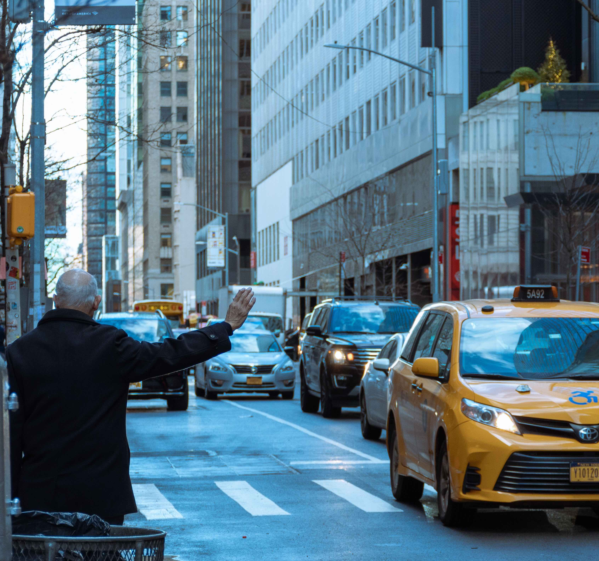

Research in the Wolfe Lab
How can driving teach us about vision?
The Wolfe Lab studies how we acquire visual information in real-world situations, mostly using driving as a tool to better understand visual perception, attention and behaviour, and the lab collaborates with researchers in U of T's Mechanical and Industrial Engineering program on much of this work. Specific research areas include:Driving and Driver Behaviour
Driving is an inherently visual task, and requires us to understand how our environment is changing if we are to stay safe on the road. In particular, the lab is interested in how drivers acquire the visual information they need to stay safe, or what information leads to drivers’ situational awareness. A particular focus of the lab’s work is on the human side of self-driving vehicles, or what the car needs to know about the person in the driver’s seat to be safe on the road. Dr. Wolfe and trainees working on these problems take a vision science approach to this problem, looking at it as a question of scene perception, peripheral vision and eye movements, with the dual goals of understanding what information drivers need, and how studying driving can teach us about the visual system.
This work is funded by a NSERC Discovery Grant to Dr. Wolfe, as well as support from the Connaught Fund and the University of Toronto XSEED program.
Rapid Holistic Perception and Evasion of Road Hazards
Journal of Experimental Psychology: General (2019) ▪ pdf ▪ Road Hazard Stimuli (described in the paper)
Towards a theory of visual information acquisition in driving.
Human Factors (2020) ▪ pdf
Road Hazard Stimuli: Annotated naturalistic road videos for studying hazard detection and scene perception.
Behavior Research Methods (2023) ▪ pdf ▪ data & materials

Visual Attention
The world (and even most laboratory experiments) is immensely visually complex, so we must be able to select some portion of our visual input for additional processing. The lab is interested in visual attention in a range of contexts, from its influence on visual localization to its role in saccade planning to its role in visual search, and sees it as integral to understanding how we acquire visual information from our environment. The lab is also interested in what happens when you have to divide your attention and what it means to be distracted.
Normal blindness: when we Look But Fail To See.
Trends in Cognitive Sciences (2022) ▪ pdf
Effects of temporal and spatiotemporal cues on detection of dynamic road hazards.
Cognitive Research: Principles and Implications (2021) ▪ pdf ▪ data & materials

Peripheral Vision
One key interests of the lab is in considering peripheral vision as a key part of how we perceive our environment. While attending to objects or locations is key (it’s really hard to find your keys on your desk otherwise), peripheral vision is the foundation on which our perception of the world rests. Information from the rest of the visual field, away from where we’re looking, is essential for planning eye movements, perceiving scenes at a glance, understanding groups (like students in a lecture hall, or a screen full of faces on Zoom), but we often don’t think about it as a key element of visual perception.
More Than the Useful Field: Considering Peripheral Vision in Driving.
Applied Ergonomics (2017) ▪ pdf
Peripheral vision in real-world tasks: A systematic review.
Psychonomic Bulletin & Review (2022) ▪ pdf ▪ supplemental data
Detection of Brake Lights While Distracted: Separating Peripheral Vision from Cognitive Load.
Attention, Perception and Psychophysics (2019) ▪ pdf
Digital Readability
What makes text (like this website) easier or harder for each person to read? We all have our preferences, and we all have our own individual needs as readers. The lab is interested in how changing the visual appearance of text can help and hinder readers, whether they are trying to read a webpage, or an icon on their smartphone. This includes studying how the perceptual experience of reading changes across the lifespan, and how a deep understanding of age-related changes in visual perception can help designers make maximally-useful designs.
This work is supported by a SSHRC Insight Grant jointly to Dr. Wolfe and Dr. Kosovicheva, as well as by gift contributions from Adobe.
Readability Research: An Interdisciplinary Approach
Foundations and Trends® in Human–Computer Interaction (2023) ▪ pdf
Glanceable, legible typography over complex backgrounds.
Ergonomics (2020) ▪ pdf
The effects of visual crowding, text size, and positional uncertainty on text legibility at a glance.
Applied Ergonomics (2018) ▪ pdf